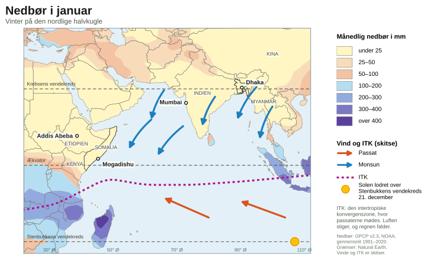
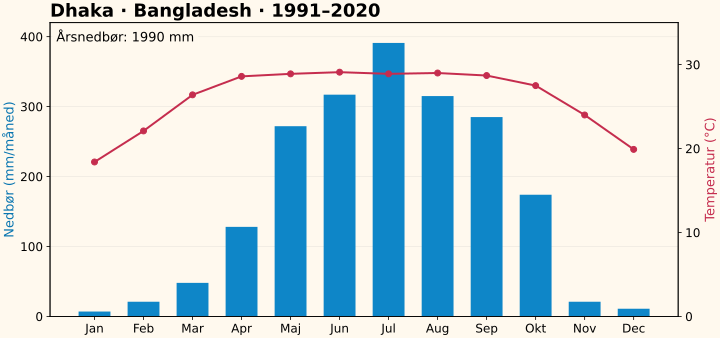
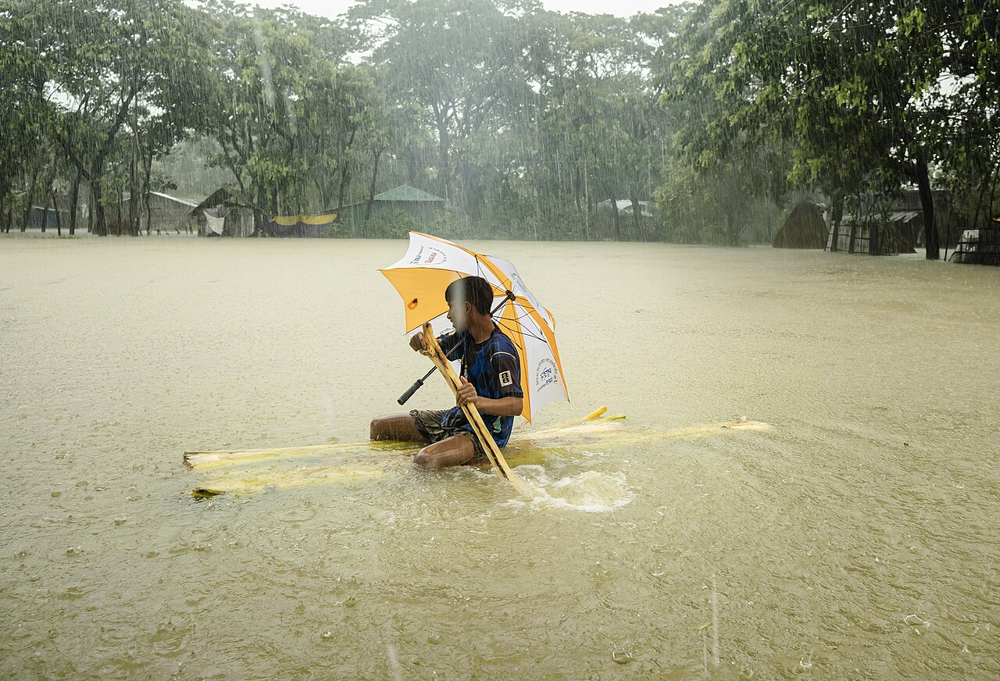
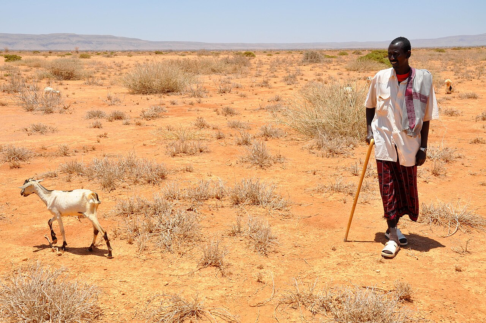

Geografibogen · Kapitel 2 · Vejr
Regnbæltet og monsunen
Regn falder ikke jævnt over året. Mange steder er der en regntid og en tørtid. Her ser du hvorfor. Du bruger kort over Sydasien og Østafrika. Til sidst ser du, hvad det betyder for dem, der dyrker maden.
1Solen vandrer mellem vendekredsene
Solen står ikke lodret over det samme sted hele året. Omkring 21. marts og 23. september står den lodret over ækvator. Den 21. juni står den lodret over Krebsens vendekreds. Den ligger på 23,4° nord.
Den 21. december står solen lodret over Stenbukkens vendekreds på 23,4° syd. Der, hvor solen står lodret, får jorden mest varme. Når solen vandrer, vandrer varmen med.
2Regnen følger solen
Ved ækvator er luften varm. Den stiger til vejrs. Derfor strømmer der luft ind mod ækvator fra nord og fra syd. Den jævne vind, der blæser mod ækvator, hedder passat.
Der, hvor passaterne mødes, kalder vi ITK. Det er en forkortelse for den intertropiske konvergenszone. Konvergens betyder, at noget mødes. Her stiger luften kraftigt. Den bliver kold, og der dannes høje skyer og meget regn (se kapitel 1). ITK er derfor et bælte med regn rundt om jorden.
Højt oppe strømmer luften væk fra ækvator. Omkring 30° nord og syd synker den igen. Synkende luft er tør. Her ligger mange af jordens ørkener.
ITK følger solen. Om sommeren på den nordlige halvkugle ligger den nord for ækvator. Om vinteren ligger den syd for. Den halter lidt efter solen. Og den flytter sig meget længere over land end over hav, fordi land bliver varmt hurtigere end hav.

Hvor ligger ITK i juli?
3I juli blæser monsunen fra havet
I kapitel 1 så du, at monsunen er en kæmpe søbrise. Nu kan du se, hvor den regner.
I juli ligger ITK højt oppe over Indien og Bangladesh. Landet er varmt, og der er lavtryk over land. Vinden blæser fra Det Indiske Ocean ind mod land. Den kommer fra sydvest. Luften er fuld af vanddamp. Den stiger, bliver kold og giver regn.
Over Bangladesh og langs Indiens vestkyst falder der over 400 mm i juli. I Dhaka er det omkring 390 mm. Det er regntiden.
4I januar blæser monsunen fra land
Om vinteren er det modsat. ITK har fulgt solen og ligger nu syd for ækvator. Over Asien er landet koldt, og der er højtryk. Vinden blæser fra nordøst, fra land ud mod havet. Luften er tør og synker.
Over Indien og Bangladesh falder der under 25 mm i januar. I Dhaka er det omkring 7 mm. Det er tørtiden.


Hvor meget regn falder der i Bangladesh i januar?
Hvorfor skifter vinden retning mellem juli og januar?
5Somalia har to regntider
Somalia ligger på Afrikas Horn, tæt på ækvator. Her passerer ITK to gange om året. Først rykker den mod nord. Det giver den store regntid, Gu, fra april til juli. Så rykker ITK mod syd igen. Det giver den lille regntid, Deyr, fra september til november.
Mellem de to regntider er der tørtid. Den første hedder Jilaal (januar til marts). Den anden hedder Hagaa (juli til september).
Klimaet i Somalia er tørt. Kun to små områder får 400–600 mm om året: et i nordvest og flodlandet ved floderne Shabelle og Juba. Når en regntid svigter, bliver der tørke. En mild tørke kommer hvert 3.–4. år. En alvorlig tørke kommer hvert 8.–10. år.
Hvorfor har Somalia to regntider?
6Regntiden bestemmer, hvad der kan dyrkes
I Bangladesh og Indien dyrker mange bønder ris og andre afgrøder i regntiden. Kommer regnen for sent, eller kommer der for lidt, kan høsten slå fejl. Kommer der for meget, går floderne over deres bredder. Så bliver marker og byer oversvømmet.

I Somalia lever mange af dyrehold og af marker, der kun får regnvand. De to regntider bestemmer, hvornår der er græs til dyrene, og hvornår man kan så.

Det skal du huske
- Solen står lodret over et nyt sted gennem året. Mellem Krebsens og Stenbukkens vendekreds vandrer den frem og tilbage.
- ITK er der, hvor passaterne mødes. Luften stiger, og det regner meget. ITK følger solen og halter lidt efter.
- ITK flytter sig længere over land end over hav.
- Monsun: Om sommeren blæser fugtig vind fra havet ind over det varme land. Om vinteren blæser tør vind fra det kolde land ud mod havet.
- I Sydasien er juli regntid og januar tørtid.
- Somalia har to regntider, fordi ITK passerer to gange: Gu (april–juli) og Deyr (september–november).
Forklar med dine egne ord til en makker: Hvorfor er der regntid i Bangladesh i juli, men tørtid i januar? Brug ordene sol, ITK, lavtryk og vind.
Se et svarforslag
I juli står solen højt over Nordindien. ITK ligger langt mod nord, og landet er varmere end havet. Der er lavtryk over land. Fugtig vind fra havet blæser ind, stiger og giver regn. I januar ligger ITK syd for ækvator. Landet er koldt, og der er højtryk. Vinden blæser fra land, og luften er tør. Derfor regner det næsten ikke.
Kilder og figurer
Nedbør på kortene (figur 3 og 4): GPCP Monthly v2.3, NOAA Climate Data Record (Adler m.fl. 2018), gennemsnit 1991–2020, 2,5° × 2,5° gitter. Landegrænser: Natural Earth. Kortene er tegnet til Geografibogen med scriptet billeder/byg_monsunkort.py.
Vindpile og ITK-linjer på kortene er skitser af hovedmønstrene, ikke målinger. Figur 1, 2 og 6 er også skitser. Nedbør og temperatur i Dhaka (figur 5): WMO-station 41923, klimanormal 1991–2020 (DWD Climate Data Center, CC BY 4.0).
Regntider og tørke i Somalia: FSNAU (Food Security and Nutrition Analysis Unit – Somalia), Climate (åbner i ny fane). Figur 7 er tegnet efter FSNAU's månedsangivelser.
Fotos (figur 8 og 9) er hentet fra Wikimedia Commons: Adrift in the Flood af Md shameem ul islam (CC BY 4.0) og Oxfam East Africa – SomalilandDrought011 af Oxfam East Africa (CC BY 2.0). Billederne er uændrede, men vist i mindre størrelse.